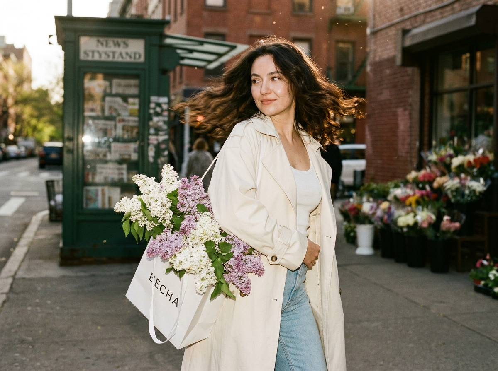
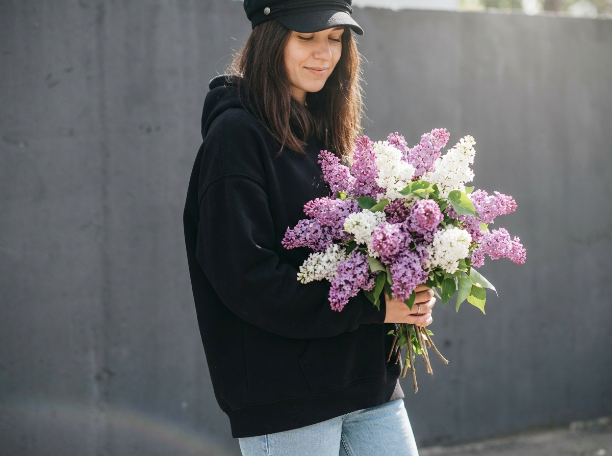
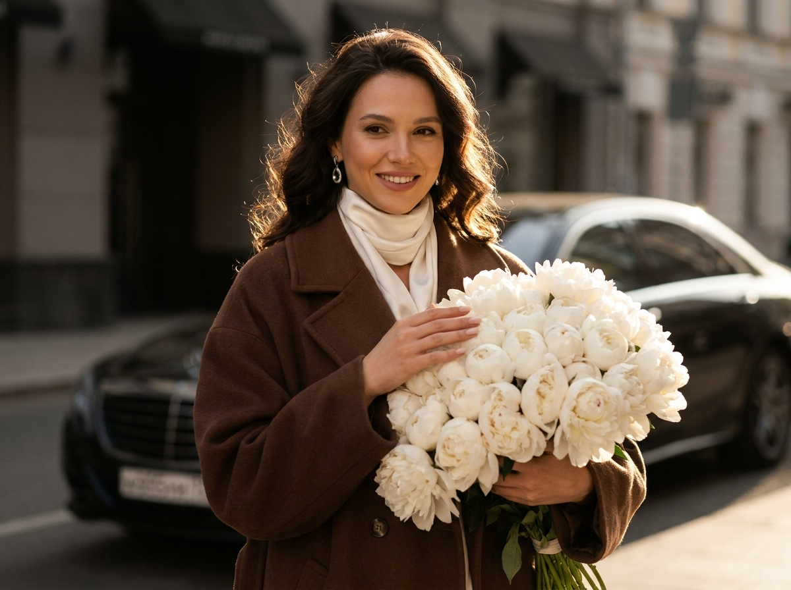
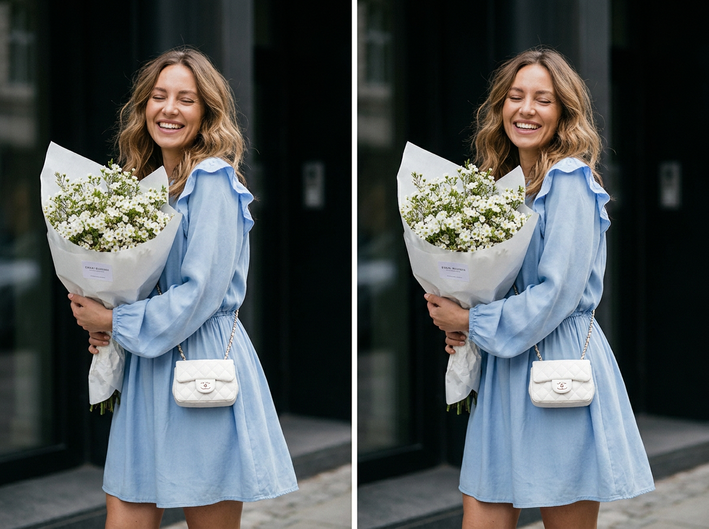
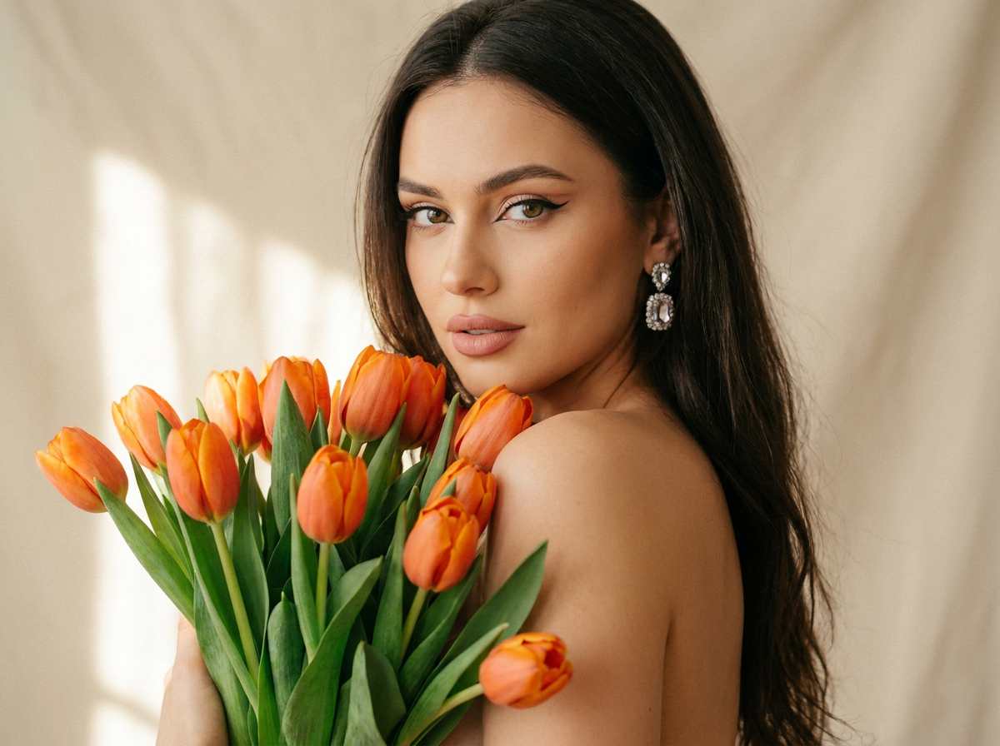
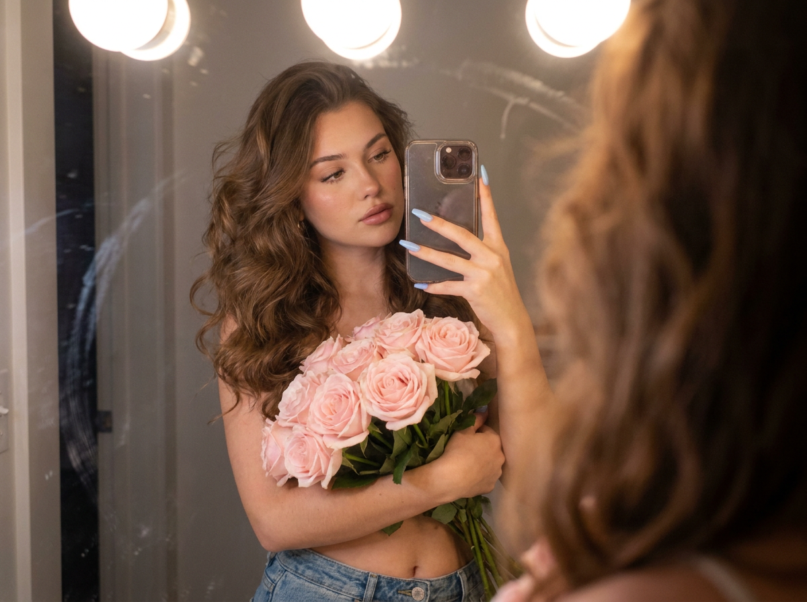
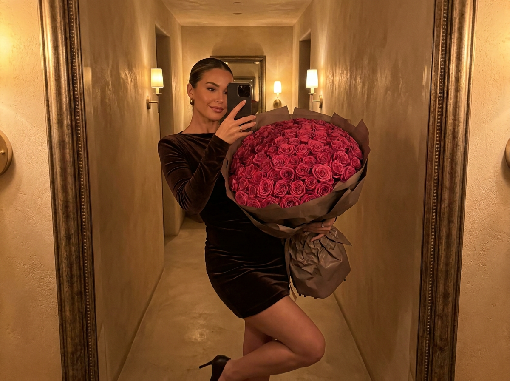
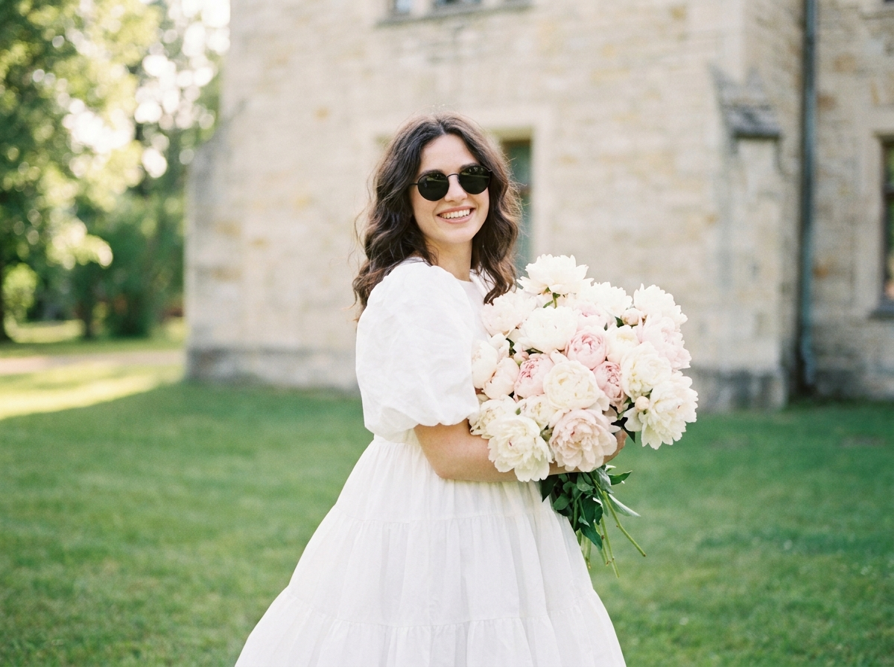
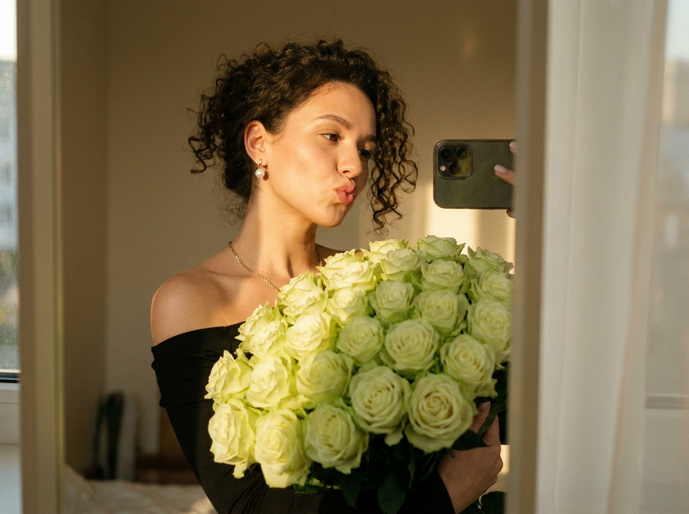
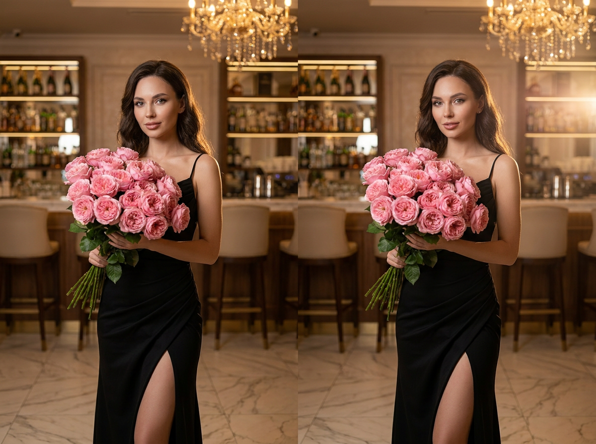

ИИ-фото с букетом: 10 промптов для нейросети

Красивый кадр с букетом сложно снять спонтанно: мешают погода, свет, поза и отсутствие подходящей локации. Генерация помогает собрать нужную сцену по описанию и заранее выбрать настроение фотографии.
В подборке — 10 промптов для нейросети: от весеннего уличного портрета с сиренью до зеркального селфи, съёмки на газоне и элегантного вечернего кадра в баре.
Как сгенерировать такое фото: пошагово
Нужен снимок анфас при ровном свете, лицо в кадре целиком, без тёмных очков и головных уборов. Разрешение от 1000 пикселей по короткой стороне. Чем чётче исходник, тем точнее модель повторит черты.
Выберите сценарий ниже и нажмите «Копировать» — текст уйдёт в буфер целиком, вместе с командой сохранения внешности. Эта команда стоит первой строкой и отвечает за то, чтобы на выходе было ваше лицо, а не случайное.
Кнопка «Сгенерировать» рядом с каждым промптом открывает модель в новой вкладке. Nano Banana Pro работает с референсом лица — в отличие от моделей, которые генерируют портрет с нуля и узнаваемость теряют.
Промпт — в поле ввода, портрет — через загрузку референса. Порядок значения не имеет, но без референса команда сохранения внешности работать не будет: модели нечего сохранять.
Для сторис и ленты берите 9:16, для превью и обложек — 4:3. Первый результат редко идеален: если поза или свет ушли не туда, поправьте соответствующую часть промпта и запустите заново. Обычно хватает двух-трёх итераций.
10 промптов для генерации
1. Весенняя прогулка с сиренью
Строго сохранить внешность по загруженному референсу: черты лица, пропорции, мимику и текстуру кожи без изменений. Фотореалистичный уличный портрет в весенний день, снятый на камеру Kodak с высокой детализацией, мягким плёночным зерном и лёгкой кинематографичной цветокоррекцией. Женщина стоит к камере почти спиной, но слегка поворачивает голову, кокетливо глядя на букет без искажения черт лица и изменения цвета волос. Её густые волнистые волосы распущены и развеваются на ветру. На руке висит белый бумажный пакет с русской надписью «ВЕСНА», из него выглядывают пышные объёмные соцветия белой и сиреневой сирени. На ней кремовое оверсайз-пальто со спущенным плечом, лацканами на плечах и рукавах, белая облегающая майка и светло-голубые джинсы. Фон: старый газетный киоск, городские здания и цветочные павильоны. Ракурс на уровне улицы, слегка заниженная точка съёмки. Тёплые карамельные оттенки, солнечные лучи и тонкая пыльца, заметная в воздухе.
2. Большой букет у стены

Строго сохранить внешность по загруженному референсу: черты лица, пропорции, мимику и текстуру кожи без изменений. Реалистичный lifestyle-портрет девушки на улице рядом с гладкой чёрной стеной или тёмной минималистичной поверхностью. Она держит огромный роскошный букет сирени, который закрывает почти половину тела. Поза непринуждённая: корпус немного развёрнут в сторону, голова слегка наклонена, глаза опущены или прикрыты, на лице мягкая спокойная улыбка человека, которому только что подарили цветы. На девушке объёмная чёрная куртка или худи и светлые джинсы — расслабленный casual street-style. Волосы тёмные или светло-каштановые, распущенные, частично выглядывают из-под кепки и лежат на плечах. Натуральный макияж, ровная кожа, лёгкий румянец, естественный оттенок губ. Яркий дневной свет, солнечный блик, мягкие тени, естественная текстура кожи и лепестков, фотореалистичная детализация, вертикальная композиция.
3. Белые пионы в золотом свете

Строго сохранить внешность по загруженному референсу: черты лица, пропорции, мимику и текстуру кожи без изменений. Кинематографичный поясной портрет женщины на улице, снятый на среднеформатную камеру Hasselblad в золотой час. Она прижимает к себе около шестисот безупречных белых пионов, создающих пышную цветочную массу на переднем плане. Женщина смотрит прямо в объектив с лёгкой загадочностью, будто случайно поймала взгляд фотографа. На ней объёмное шоколадно-коричневое пальто и молочно-белый атласный платок, завязанный на шее; на ногтях аккуратный нюдовый маникюр квадратной формы. Длинные волосы развеваются и светятся в контровом освещении, вокруг прядей появляются золотистые ореолы, рядом видны изящные серьги. За спиной — чёрный люксовый автомобиль и затенённые фасады зданий. Малая глубина резкости отделяет фигуру от фактурного городского фона. Объёмный тёплый свет на лице, атмосфера драматичного авторского кино, высокая детализация.
4. Счастливый портрет с пионами

Строго сохранить внешность по загруженному референсу: черты лица, пропорции, мимику и текстуру кожи без изменений. Ультрадетализированный lifestyle fashion-портрет на открытом воздухе, кадрирование от середины бедра и выше, малая глубина резкости и мягкое размытие фона. Женщина слегка развёрнута к камере и обеими руками прижимает к груди большой букет белых цветов. Плечи расслаблены, корпус чуть наклонён вперёд, голова отклонена в сторону. Она широко и искренне улыбается, показывая зубы, глаза мягко закрыты в беззаботный счастливый момент. На ней свободное пастельно-голубое платье с длинными рукавами, нежными воланами на плечах, подчёркнутой талией и расширяющейся юбкой. Через плечо на уровне талии перекинута маленькая белая стёганая сумка на цепочке. На шее тонкая золотая цепочка с подвеской. Объёмные волосы средней длины уложены мягкими волнами. Естественный дневной свет, воздушная цветокоррекция, фотореалистичная кожа, ткань и лепестки.
5. Оранжевые тюльпаны крупным планом

Строго сохранить внешность по загруженному референсу: черты лица, пропорции, мимику и текстуру кожи без изменений. Фотореалистичный портрет молодой женщины в три четверти, кадр по плечи и лицо, с полуобнажёнными плечами. На переднем плане — крупный пышный букет ярко-оранжевых тюльпанов с сочными зелёными листьями; цветы частично перекрывают одно плечо и добавляют композиции глубину. Женщина смотрит через плечо прямо в объектив: взгляд уверенный, мягкий, с лёгким ощущением интимности. Длинные волосы свободно спадают по спине и плечам, обрамляя лицо. На ушах заметны эффектные серьги-кристаллы, отражающие свет. Макияж нежный, но выразительный: чёткая графичная стрелка подчёркивает форму глаз, губы покрыты матовой помадой натурального розово-бежевого оттенка, кожа сияет естественно и без перегруза. Резкий фокус одновременно на глазах и тюльпанах, фон и края кадра растворяются в мягком размытии. Студийное качество, высокая детализация кожи, лепестков и украшений.
6. Зеркальное селфи с розами

Строго сохранить внешность по загруженному референсу: черты лица, пропорции, мимику и текстуру кожи без изменений. Крупный зеркальный селфи-портрет молодой женщины, которая держит букет бледно-розовых роз. Сцена камерная и романтичная: мягкий тёплый свет гримерных ламп падает сверху, на зеркале видны лёгкие разводы и естественные следы поверхности. Телефон с отражающим чехлом частично закрывает лицо. У женщины натуральный макияж, слегка приоткрытые губы, волнистые каштановые волосы с заметным объёмом и длинные голубые ногти. В образе — джинсы и открытый живот, непринуждённая домашняя стилизация. Палитра пастельная, тон кожи естественный, лепестки роз прорисованы реалистично. Использовать малую глубину резкости, мягкую плёночную зернистость, кинематографичную тональную градацию и высокое разрешение. В отражении сохранить правдоподобную геометрию телефона, рук, букета и зеркала, без лишних пальцев и деформаций.
7. Роскошное селфи с розами

Строго сохранить внешность по загруженному референсу: черты лица, пропорции, мимику и текстуру кожи без изменений. Фотореалистичное зеркальное селфи женщины в тёплом коридоре с фактурными стенами и мягким атмосферным освещением. В руках у неё массивный букет тёмно-розовых роз, обёрнутый в бумагу глубокого серо-коричневого оттенка. На женщине облегающее мини-платье из тёмно-коричневого бархата с длинными рукавами и туфли на высоком каблуке. Поза уверенная и соблазнительная: одно колено немного согнуто, бедро отведено в сторону, корпус выглядит расслабленно. Выражение лица спокойное, смелое, с ощущением fashion-съёмки для роскошного Instagram-образа. В кадре должны правдоподобно читаться отражение в зеркале, текстура бархата, отдельные лепестки и бумага упаковки. Мягкий рассеянный свет, выразительный кинематографичный контраст, высокая детализация, натуральные тени, реалистичные пропорции рук и букета.
8. Пионы на летнем газоне

Строго сохранить внешность по загруженному референсу: черты лица, пропорции, мимику и текстуру кожи без изменений. Фотореалистичный портрет молодой женщины на зелёной лужайке перед светлым зданием. Она стоит в пышном белом многоярусном платье с объёмным рукавом и держит огромный букет пастельно-розовых и белых пионов. Женщина улыбается, на ней тёмные стильные солнечные очки, а длинные волнистые волосы свободно падают на плечи. Композиция портретная, фигура и цветы занимают центральную часть кадра, фон уходит в мягкое красивое боке. Свет тёплый, дневной, с ощущением летнего утра; оттенки нежные, пастельные, без чрезмерной насыщенности. Подробно передать естественную текстуру кожи, ткань многоярусного платья, объём рукава и тонкие лепестки пионов. Использовать малую глубину резкости, лёгкое плёночное зерно, высокое разрешение и мягкие натуральные тени. Общий настрой — светлый, воздушный и радостный.
9. Зелёные розы в зеркале

Строго сохранить внешность по загруженному референсу: черты лица, пропорции, мимику и текстуру кожи без изменений. Фотореалистичный зеркальный селфи-портрет молодой женщины с кудрявыми волосами. Она держит огромный букет бледно-зелёных роз, а в другой руке виден смартфон в отражении. На женщине чёрный топ с открытыми плечами, на шее тонкая цепочка, в ушах перламутровые серьги. Губы сложены в игривую поцелуйную гримасу. Свет золотого часа тёплый и направленный, он мягко подсвечивает кудри, лицо, края букета и зеркальную поверхность. Сохранить естественные тона кожи, реалистичную фактуру лепестков, натуральные тени и небольшие блики. Добавить мягкую кинематографичную цветокоррекцию, деликатное боке и малую глубину резкости. Параметры съёмки: объектив 35 мм, диафрагма f/1.8, высокое разрешение, правдоподобная геометрия отражения, аккуратные руки без лишних пальцев.
10. Вечерний букет в баре

Строго сохранить внешность по загруженному референсу: черты лица, пропорции, мимику и текстуру кожи без изменений. Фотореалистичный портрет женщины в полный рост до трёх четвертей фигуры, стоящей в роскошном барном интерьере. На ней элегантное чёрное вечернее платье с высоким разрезом, в руках — огромный букет розовых кустовых роз. Поза утончённая и уверенная, корпус слегка развёрнут, букет занимает заметную часть композиции. На заднем плане видны бутылки на полках, барные стулья и мраморный пол; детали интерьера мягко уходят в выразительное боке. Свет тёплый: мягкий боковой источник сочетается с золотистым верхним светом от люстры и деликатным контровым подсвечиванием силуэта. Использовать объектив 85 мм, диафрагму f/1.8, малую глубину резкости и высокое разрешение. Сохранить натуральные оттенки кожи, точную фактуру ткани и лепестков, романтическую атмосферу, мягкую кинематографичную цветокоррекцию.
Что важно учесть в этом стиле
Букет должен быть частью композиции, а не случайным объектом в руках. Заранее задавайте его размер, положение и степень перекрытия тела: огромная сирень создаёт ощущение изобилия, а цветы на переднем плане добавляют портрету глубину.
Для реалистичного результата описывайте источник света и оптику. Объектив 85 мм с f/1.8 даст мягкое размытие фона, 35 мм лучше покажет зеркало и интерьер, а золотой час добавит тёплые контуры волос. Отдельно фиксируйте руки, пальцы, лепестки и текстуру ткани — именно эти детали чаще всего выдают генерацию.
Идеи для вариаций
- Замените сирень на гортензии, ранункулюсы или ветки цветущей вишни.
- Перенесите сцену из городского киоска на фермерский рынок, вокзал или тихую улицу старого района.
- Поменяйте настроение: сделайте взгляд задумчивым, смех естественным или позу более editorial.
- Добавьте дождь на стекле, вечерние фонари, туман или солнечные зайчики на лепестках.
- Для праздничного кадра используйте ленты, крафтовую упаковку, открытку или небольшую коробку конфет.
Как собрать свой промпт
Начните с типа снимка и кадрирования: зеркальное селфи, поясной портрет или композиция до трёх четвертей. Затем укажите позу, направление взгляда, выражение лица и положение букета. После этого добавьте внешние признаки образа — одежду, причёску, макияж, украшения.
Финальный слой промпта — место, свет и техника. Запишите локацию, время суток, характер теней, фокусное расстояние, диафрагму и глубину резкости. Если нужен референс лица, прикрепите его отдельно и попросите сохранить идентичность без изменения ключевых черт, но не перегружайте текст повторяющимися запретами.
Ошибки, из-за которых кадр не получается
- Слишком общий букет. Если не указать сорт, цвет и масштаб, нейросеть смешает несколько видов цветов и сделает композицию невнятной.
- Неправильная анатомия рук. Для селфи отдельно описывайте телефон, отражение и положение пальцев, а результат проверяйте крупным планом.
- Перегруженная сцена. Много деталей на заднем плане конкурируют с лицом и цветами, поэтому второстепенные объекты лучше отправлять в мягкое размытие.
- Противоречивый свет. Не сочетайте без объяснения холодную вспышку, золотой час и свет люстры — задайте один главный источник и один дополнительный.
- Нечёткое кадрирование. Укажите, где обрезается фигура и какую часть тела перекрывает букет, иначе композиция может потерять исходную задумку.
Частые вопросы
Как сделать такое ИИ-фото бесплатно?
Попробуйте Kandinsky или Шедеврум: они подходят для генерации по тексту и обычно имеют ограничения по числу попыток, скорости и разрешению. Krea AI и Arena.ai удобны для экспериментов с разными моделями, но доступность референса лица, загрузки изображения и отдельных функций может меняться. Бесплатный режим не гарантирует точного сходства: для портрета с референсом часто приходится делать несколько генераций и вручную выбирать лучший результат.
Как сохранить лицо по референсу?
Загрузите чёткий снимок без сильных фильтров, где хорошо видны глаза, нос, линия подбородка и форма лица. В промпте опишите сцену и образ, а просьбу о сохранении идентичности добавьте коротко. Для стабильного сходства используйте одну и ту же фотографию, не меняйте одновременно ракурс, возраст и причёску.
Почему нейросеть искажает букет?
Цветы состоят из множества повторяющихся мелких элементов, поэтому модель может путать лепестки, стебли и упаковку. Уточняйте сорт, оттенок, размер букета и его положение относительно тела. Если нужен реализм, добавьте естественную нерегулярность цветков, резкий фокус на переднем плане и запрет на лишние стебли.
Как получить фотографичный свет и боке?
Укажите время съёмки, направление источника и характер теней: например, золотой час, контровой свет и мягкое свечение по краям волос. Для портрета подойдут 85 мм и f/1.8, для зеркальной сцены — 35 мм и f/1.8. Также задайте малую глубину резкости, но оставьте лицо и ближайшие цветы в зоне резкого фокуса.